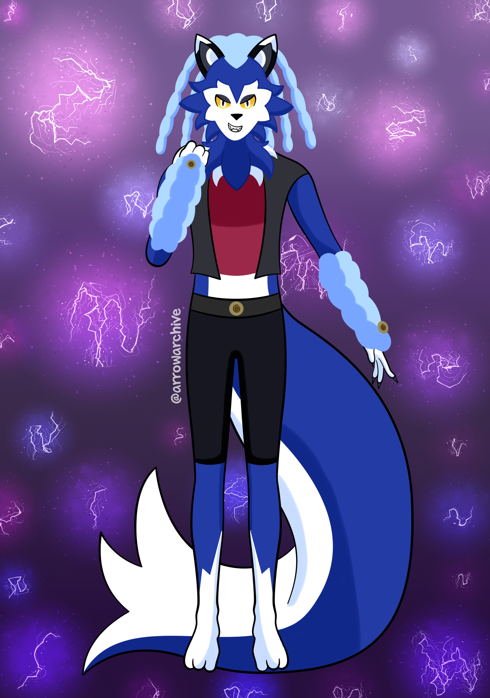

Introducing: Leo
It’s been a while! I’ve been busy with classes and my easter drawing, but I was able to finish this in between. If you do a coin flip with my style, I either draw aliens with human-like appearances/attributes, or anthropomorphic animals with supernatural powers. If it’s not those, it’s a combination of both.
Leo is friends with Lylatt, who I drew last month. He is a storm wolf born with the power to change the weather depending on his emotions. The elements they control and their intensity depend on their genetics. They can control multiple elements with mild intensity, or one element with high intensity. I won’t say where he falls on this scale.
I haven’t drawn wolves before, so his appearance was difficult to nail. After I got the look I wanted, everything else was easy. I hope that I’ll get better at drawing him over time.